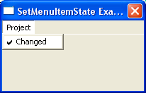

SetMenuItemState()
语法
SetMenuItemState(#Menu, MenuItem, State)概要
Changes the specified MenuItem state. This functions allows you to display a 'check mark' next to the menu item text.
参数
#Menu The menu to use. MenuItem The menu item to set the state for. State The state to set. The check is not displayed when State equals 0, if State equals something else then the 'check mark' will be displayed.
返回值
无.
备注
GetMenuItemState() can be used to retrieve the current menu item state.
示例
If OpenWindow(0, 200, 200, 200, 100, "SetMenuItemState Example") If CreateMenu(0, WindowID(0)) MenuTitle("Project") MenuItem(1, "Changed") SetMenuItemState(0, 1, 1) ; set check mark for the previously created menu item EndIf Repeat : Until WaitWindowEvent() = #PB_Event_CloseWindow EndIf
参阅
GetMenuItemState()
已支持操作系统
所有